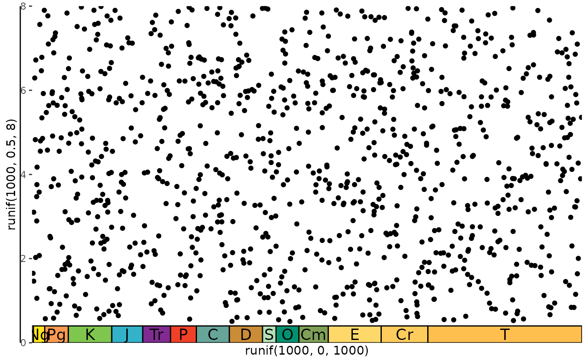
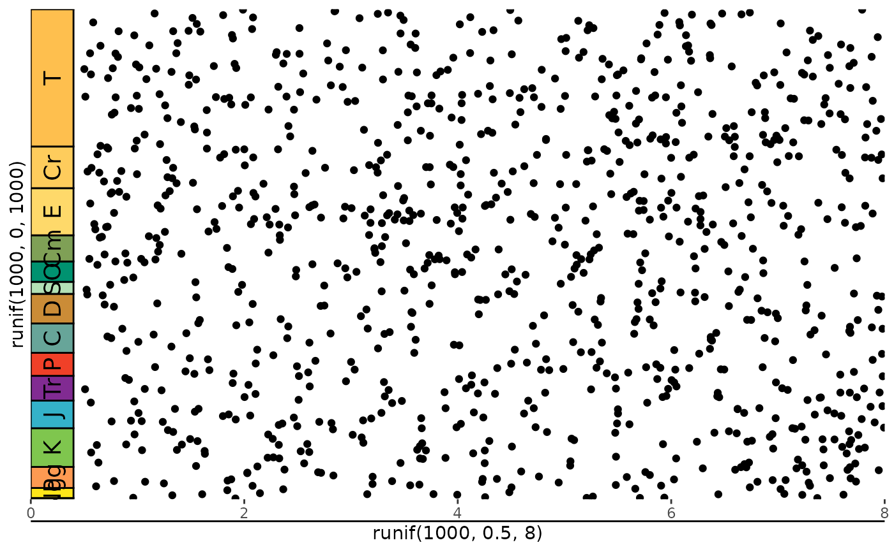
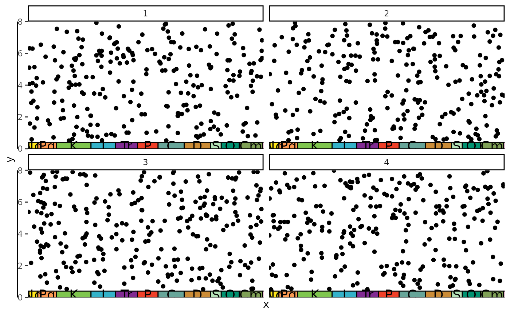
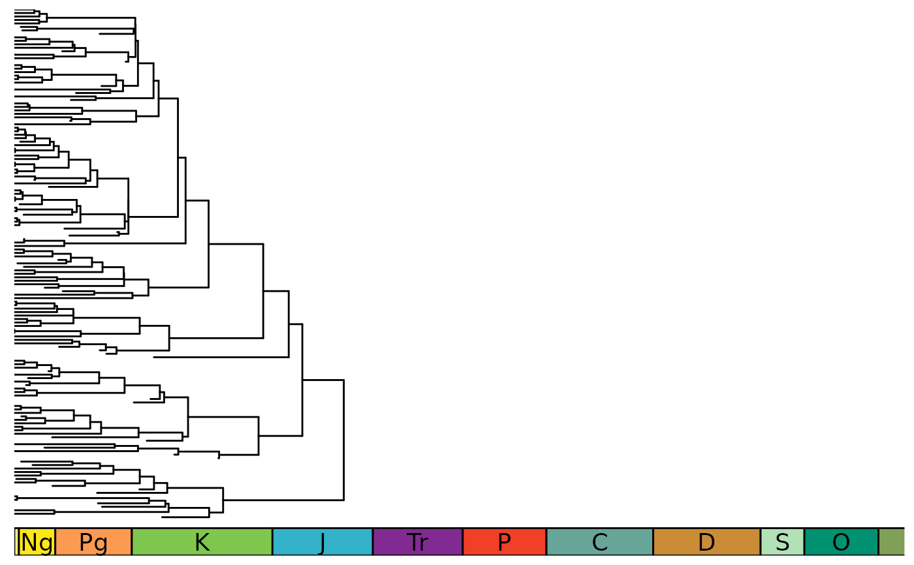
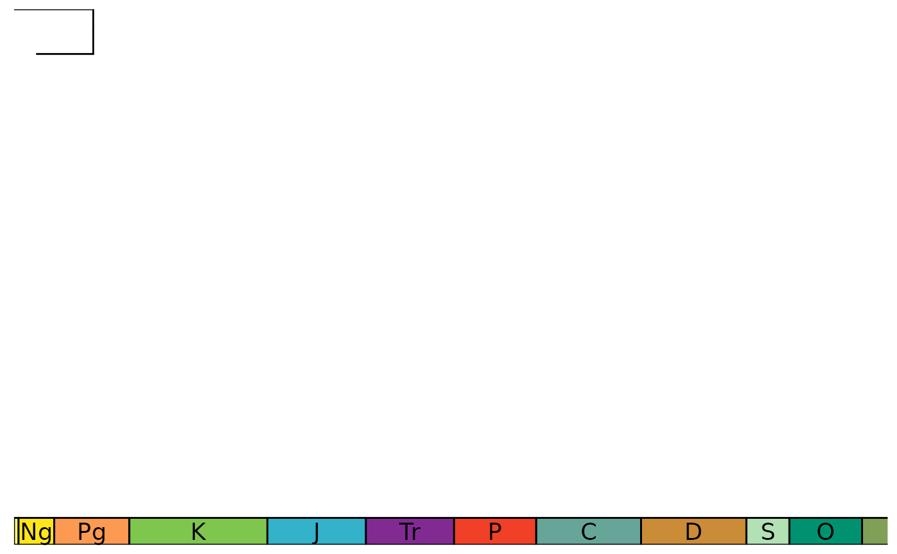

This function takes a ggplot object and adds a geologic time scale at the specified side.
Usage
gggeo_scale_old(
gg,
dat = "periods",
fill = NULL,
color = "black",
alpha = 1,
height = 0.05,
gap = 0,
pos = "bottom",
lab = TRUE,
rot = 0,
abbrv = TRUE,
skip = c("Quaternary", "Holocene", "Late Pleistocene"),
size = 5,
neg = FALSE
)Arguments
- gg
The ggplot object.
- dat
Either A) a string indicating a built-in dataframe with interval data from the ICS ("periods", "epochs", "stages", "eons", or "eras"), B) a string indicating a timescale from macrostrat (see list here: https://macrostrat.org/api/defs/timescales?all), or C) a custom dataframe of time interval boundaries (see Details).
- fill
The fill color of the boxes. The default is to use the colors included in
dat. If a custom dataset is provided withdatwithout color and without fill, a greyscale will be used. Custom fill colors can be provided with this option and will be recycled if/as necessary.- color
The outline color of the interval boxes.
- alpha
The transparency of the fill colors.
- height
The proportional height (or width if
posisleftorright) of the entire plot to use for the scale.- gap
The proportional height (or width) of the entire plot to use as a gap between the axis and the scale.
- pos
Which side to add the scale to (left, right, top, or bottom). First letter may also be used.
- lab
Whether to include labels.
- rot
The amount of counter-clockwise rotation to add to the labels (in degrees).
- abbrv
If including labels, whether to use abbreviations instead of full interval names.
- skip
A vector of interval names indicating which intervals should not be labeled.
- size
Label size.
- neg
Set this to true if your x-axis is using negative values.
Details
If custom data is provided (with dat), it should consist of at least 3 columns of data. See data(periods) for an example.
The name column lists the names of each time interval. These will be used as labels if no abbreviations are provided.
The max_age column lists the oldest boundary of each time interval.
The min_age column lists the youngest boundary of each time interval.
The abbr column is optional and lists abbreviations that may be used as labels.
The color column is also optional and lists a hex color code (which can be obtained with rgb()) for each time interval.
Examples
library(ggplot2)
# bottom scale by default
p <- ggplot() +
geom_point(aes(y = runif(1000, .5, 8), x = runif(1000, 0, 1000))) +
scale_x_reverse() +
coord_cartesian(xlim = c(0, 1000), ylim = c(0,8), expand = FALSE) +
theme_classic()
gggeo_scale_old(p)

# can specify any side of the plot
p <- ggplot() +
geom_point(aes(x = runif(1000, .5, 8), y = runif(1000, 0, 1000))) +
scale_y_reverse() +
coord_cartesian(xlim = c(0, 8), ylim = c(0,1000), expand = FALSE) +
theme_classic()
gggeo_scale_old(p, pos = "left", rot = 90)

# can add multiple scales
p <- ggplot() +
geom_point(aes(y = runif(1000, 1, 8), x = runif(1000, 0, 1000))) +
scale_x_reverse() +
coord_cartesian(xlim = c(0, 100), ylim = c(0,8), expand = FALSE) +
theme_classic()
p <- gggeo_scale_old(p, height = .03, abbrv = FALSE)
p <- gggeo_scale_old(p, dat = "epochs", gap = .03, height = .1, rot = 90, size = 2.5, abbrv = FALSE)
# intervals on both sides for different timescales (ICS stages vs North American Land Mammal Ages)
p <- ggplot() +
geom_point(aes(x = runif(1000, 1, 9), y = runif(1000, 0, 65))) +
scale_y_reverse() +
coord_cartesian(xlim = c(0, 10), ylim = c(0,65), expand = FALSE) +
theme_classic()
p <- gggeo_scale_old(p, dat = "stages", pos = "left", height = .1, size = 2.5, abbrv = FALSE)
gggeo_scale_old(p, dat = "North American Land Mammal Ages", pos = "right", height = .1, size = 2.5,
abbrv = FALSE)

#can add scales to a faceted plot
df <- data.frame(x = runif(1000,0,541), y = runif(1000,.5,8), z = sample(c(1,2,3,4), 1000, TRUE))
p <- ggplot(df) +
geom_point(aes(x, y)) +
scale_x_reverse() +
coord_cartesian(xlim = c(0, 541), ylim = c(0,8), expand = FALSE) +
theme_classic() +
facet_wrap(~z, nrow = 2)
gggeo_scale_old(p)

#can even add a scale to a phylogeny (using ggtree)
library(phytools)
library(ggtree)
tree <- pbtree(b = .03, d = .01, n=100)
p <- ggtree(tree) +
coord_cartesian(xlim = c(0,-500), ylim = c(-10,Ntip(tree)), expand = FALSE) +
scale_x_continuous(breaks=seq(-500,0,100), labels=abs(seq(-500,0,100))) +
theme_tree2()
p <- revts(p)
gggeo_scale_old(p, neg = TRUE)
